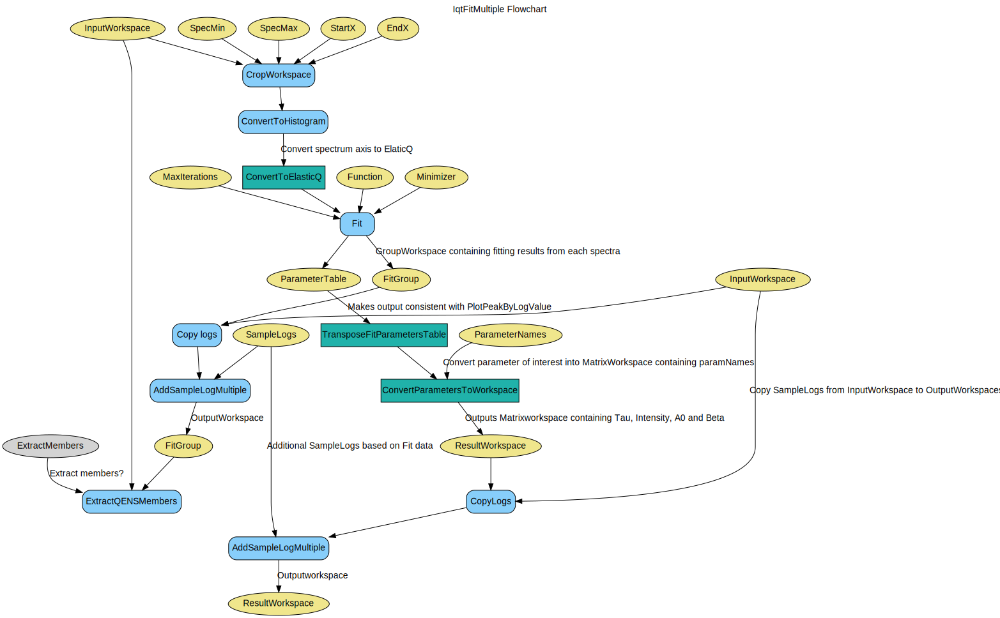

\(\renewcommand\AA{\unicode{x212B}}\)
IqtFitMultiple v1¶
{kind=link}
IqtFitMultiple dialog.¶
Summary¶
Fits an *_iqt file generated by I(Q,t).
Properties¶
Name |
Direction |
Type |
Default |
Description |
|---|---|---|---|---|
InputWorkspace |
Input |
Mandatory |
The _iqt.nxs InputWorkspace used by the algorithm |
|
Function |
InOut |
Function |
Mandatory |
The function to use in fitting |
FitType |
Input |
string |
The type of fit being carried out |
|
StartX |
Input |
number |
0 |
The first value for X |
EndX |
Input |
number |
0.2 |
The last value for X |
SpecMin |
Input |
number |
0 |
Minimum spectra in the workspace to fit |
SpecMax |
Input |
number |
1 |
Maximum spectra in the workspace to fit |
Minimizer |
Input |
string |
Levenberg-Marquardt |
The minimizer to use in fitting |
MaxIterations |
Input |
number |
500 |
The Maximum number of iterations for the fit |
ConstrainIntensities |
Input |
boolean |
False |
If the Intensities should be constrained during the fit |
ExtractMembers |
Input |
boolean |
False |
If true, then each member of the fit will be extracted, into their own workspace. These workspaces will have a histogram for each spectrum (Q-value) and will be grouped. |
OutputResultWorkspace |
Output |
Mandatory |
The output workspace containing the results of the fit data |
|
OutputParameterWorkspace |
Output |
Mandatory |
The output workspace containing the parameters for each fit |
|
OutputWorkspaceGroup |
Output |
WorkspaceGroup |
Mandatory |
The OutputWorkspace group Data, Calc and Diff, values for the fit of each spectra |
Description¶
Fits an *_iqt file generated by Iqt using one of the specified functions. The functions available are either one or two exponentials (\(Intensity \times exp[-(x/\tau)]\)), a stretched exponential (\(Intensity \times exp[-(x/\tau)]\beta\)) or a combination of both an exponential and stretched exponential.
This routine was originally part of the MODES package.
Workflow¶
Usage¶
Example - Running IqtFitMultiple on an reduced workspace.
#Load in iqt data
input_ws = Load(Filename='iris26176_graphite002_iqt.nxs')
function = r'name=LinearBackground,A0=0.027668,A1=0,ties=(A1=0);name=UserFunction,Formula=Intensity*exp(-(x/Tau)^Beta),Intensity=0.972332,Tau=0.0247558,Beta=1;ties=(f1.Intensity=1-f0.A0)'
#run IqtFitMultiple
result, params, fit_group = IqtFitMultiple(InputWorkspace=input_ws, Function=function, FitType='1S_s', StartX=0, EndX=0.2, SpecMin=0, SpecMax=16)
Categories: AlgorithmIndex | Workflow\MIDAS
Source¶
Python: IqtFitMultiple.py